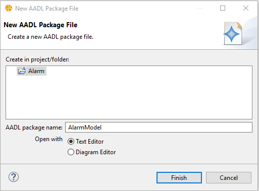
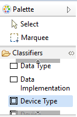
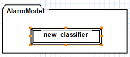
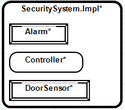
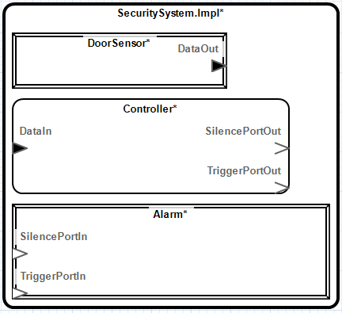
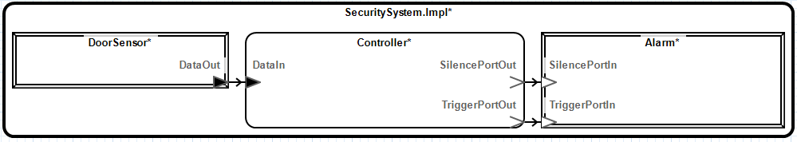
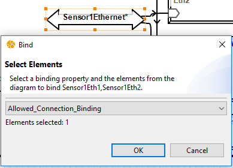

This tutorial shows how to create a very simple model designed to show the basic functionality of the graphical editor.
1. Create a New Project 1. Select File->New->Other…->AADL->AADL Project. 2. Enter project name: "Alarm". 3. Select Finish.
Create Package
Right-click Alarm project in the AADL Navigator.
Select New->Other…->AADL->AADL Package.
Enter package name: "AlarmModel".

Select Finish.
Create Package Diagram
Right-click Alarm->AlarmModel.aadl in the AADL Navigator.
Select Create Diagram...
Select OK on the Create Diagram dialog.
Create Classifiers
While viewing the AlarmModel package diagram:
Expand the Classifiers section in the palette.
Select Device Type.

Click inside the AlarmModel package diagram element, the device will appear on the diagram.
Rename the new device type.
Select the device type diagram element.

Select the name label, a editable field will appear.
Enter: "Alarm".
Press the Enter key.
Create the following types:
Device type named "DoorSensor".
Data type named "SensorData".
System type named "Controller".
Create a system type and implementation.
Create a System Implementation from the palette, a Create Component Implemenation dialog will appear.
Enter the implementation's identifier: "Impl".
Select New Component Type.
Enter the type's identifier: "SecuritySystem".
Right-click the diagram and select Layout->Layout Diagram for easier viewing (See section 10).
Open Implementation Diagram
Right-click SecuritySystem.Impl.
Select Open->Implementation Diagram, a Create New Diagram? dialog will appear.
Select Yes, a Create Diagram dialog will appear.
Select OK.
Create Subcomponents
Create a device subcomponent using the palette and rename it to "DoorSensor".
Double click the DoorSensor subcomponent to open the Properties view.
Select the AADL tab in the Properties view.
In the Classifier section, select Choose..., a Select a classifier. dialog will appear.
Select AlarmModel::DoorSensor.
Select OK.
Create the following subcomponents:
Device subcomponent named Alarm, Classifier: AlarmModel::Alarm.
System subcomponent named Controller, Classifier: AlarmModel::Controller.

Create Features
Use the palette to create a data Port named "DataOut" in DoorSensor.
Use the AADL section in the Properties view to:
Set DataOut to Output.
Set the classifier to AlarmModel::SensorData
Create an input data port named "DataIn" in Controller and set the classifier to AlarmModel::SensorData.
Create two output event ports, "TriggerPortOut" and "SilencePortOut" to Controller.
Create two input event ports, "TriggerPortIn" and "SilencePortIn" to Alarm. 
Create Connections
Select Port Connection from the palette.
Select the connection source, DoorSensor.DataOut.
Select the connection destination, Controller.DataIn.
Right-click the connection in the Outline view.
Select Rename..., the Rename dialog will appear.
Enter SensorDataConnection
Select OK.
Create the following connections:
Port connection named "TriggerPortConnection", with Source: Controller.TriggerPortOut and Destination: Controller.TriggerPortIn.
Port connection named "SilencePortConnection", with Source: Alarm.TriggerPortOut and Destination: Alarm.TriggerPortIn. 
2 Tutorial: Advanced
This tutorial will show more advanced features of the graphical editor. These features include bindings, AADL properties, instantiation, and analysis.
1. Create a new project named "ClimateControl".
Create a new package named "Hardware" and open with diagram editor.
Create Classifiers
Create a bus type named "EthernetSwitch" that contains four provides bus accesses with their classifier set to Hardware::EthernetSwitch:
"CPUAccess".
"Sensor1Access".
"Sensor2Access".
"ActuatorAccess".
Create a device type named "Ethernet" that contains:
Bidirectional data port named "EthernetPort".
Requires bus access named "SwitchAccess" with the classifier set to Hardware::EthernetSwitch.
Create a device type named "Sensor" that contains:
Bidirectional data port named "SensorData".
Output data port named "SensorOut".
Create a device type named "Actuator" that contains:
Bidirectional data port named "ActuatorData".
Input data port named "ActuatorIn".
Create a processor type named "CPU" that contains a bidirectional data port named "CPUData".
Create a system and system implementation named "TempuratureSystem" and "TempuratureSystem.Impl", respectively, that contains:
Input data port named "CommandIn".
Output data port named "Sensor1DataOut".
Output data port named "Sensor2DataOut".
Set AADL Properties
Select Window->Show View-> AADL Property Values.
Select Show undefined properties in the view menu.
Select the EthernetSwitch diagram element.
Right-click Memory_Properties::Data_Size
Select Create Local Property Association.
Enter "200 Bytes".
Set SEI::BandwidthCapacity to "50.0 KBytesps".
Set Timing_Properties::Period to "25ms".
Show AADL Properties on Diagrams
Right-click EthernetSwitch.
Select Configure Diagram..., the dialog will appear.
Select Add... in the AADL Properties section.
Select Timing_Properties->Period.
Select OK.
Open the TempuratureSystem.Impl implementation diagram.
Create Subcomponents
Create a processor named "CPU" with classifier set to TemperatureSystem::CPU.
Create a device named "TempSensor1" with classifier set to TemperatureSystem::Sensor.
Create a device named "TempSensor2" with classifier set to TemperatureSystem::Sensor.
Create a device named "Actuator" with classifier set to TemeratureSystem::Actuator.
Create four devices named "CPUEthernet", "Sensor1Ethernet", "Sensor2Ethernet", "ActuatorEthernet", and set their classifiers to TemperatureSystem::Ethernet.
Create a bus named "EthernetSwitch" with classifier set to TemperatureSystem::EthernetSwtich.
Create Connections
Create access connections:
EthernetSwitch.CPUAccess -> CPUEthernet.SwitchAccess named "CPUAccessCon".
EthernetSwitch.Sensor1Access -> Sensor1Ethernet.SwitchAccess named "Sensor1AccessCon".
EthernetSwitch.Sensor2Access -> Sensor2Ethernet.SwitchAccess named "Sensor2AccessCon".
EthernetSwitch.ActuatorAccess -> ActuatorEthernet.SwitchAccess named "ActuatorAccessCon".
Select CPUAccessCon, ActuatorAccessCon, Sensor1AccessCon, and Sensor2AccessCon.
Select Bind... from the toolbar, the Bind dialog will appear.
Select the EthernetSwitch diagram element.
Select Actual_Connection_Binding from the drop-down.

Select OK.
Use the AADL Property Values view to set SEI::BandwidthBudget to 10.0 KBytesps for CPUAccessCon, ActuatorAccessCon, Sensor1AccessCon, and Sensor2AccessCon.
Create a package named "Software" and open with diagram editor.
Create Classifiers
Create a thread type named "ProcessData" that contains:
Input data port named "DataIn".
Output data port named "DataOut".
Create a thread type named "ReadData" that contains:
Input data port named "Sensor1DataIn".
Input data port named "Sensor2DataIn".
Output data port named "DataOut".
Create a process type and implementation named "Controller" and "Controller.Impl", respectively, that contains:
Input data port named "ControllerIn".
Output data port named ""ControllerOut".
Thread named "ProduceCommand" with classifier set to Software::ProcessData.
Right-click Controller.Impl.ProduceCommand and select Show->Features->All.
Port connection: Controller.Impl.ControllerIn -> ProduceCommand.DataIn.
Port connection: ProduceCommand.DataOut -> Controller.Impl.ControllerOut.
Create a process type and implementation named "Fuser" and "Fuser.Impl", respectively, that contains:
Input data port named "Sensor1DataIn".
Input data port named "Sensor2DataIn".
Output data port named "FuseOut".
Thread named "ReadSensors" with classifier set to Software::ReadData.
Thread named "FuseData" with classifier set to Software::ProcessData.
Port connection: Fuser.Impl.Sensor1DataIn -> ReadSensors.Sensor1DataIn.
Port connection: Fuser.Impl.Sensor2DataIn -> ReadSensors.Sensor2DataIn.
Port connection: ReadSensors.DataOut -> FuseData.DataIn.
Port connection: FuseData.DataOut -> FuseOut.
Create a system type and implementation named "Application" and "Application.Impl", respectively, that contains:
Two input data ports named "Sensor1DataIn" and "Sensor2DataIn".
Output data port named "CommandOut".
Open Application.Impl implementation diagram.
Create Subcomponents and Connections
Create a process named "Fuser" with classifier set to Software::Fuser.Impl.
Create a process named "Controller" with classifier set to Software::Controller.Impl.
Open *Integration_ControlSystem_Impl_Instance__Bandwidth.csv*.
3 Creating Model Elements
Most elements are created by selecting the desired element from the palette and placing it on the diagram.
3.1 Creating Classifier Implementations
Select the desired implementation from the palette and place it on the diagram or on an eligible type.
3.2 Creating Mode Transitions
Select Mode Transition from the palette and select the starting mode then the ending mode (See section ¿sec:mode_transition?).
3.3 Creating Flow Implementations and End-To-End Flow Specifications
When editing a component implementation, flow implementations and end-to-end flow specifications can be created graphically by selecting the Create Flow Implementation and Create End-To-End Flow Specification tools from the toolbar and following the prompts to select a series of elements from the diagram (See section ¿sec:ete_flow? and section ¿sec:flow_implmentation?).
4 Editing Model Elements
4.1 Properties View
The properties sheet contains properties for the currently selected diagram elements. The properties sheet can be opened by double-clicking on a diagram element in the diagram or in the outline. Alternatively, the properties sheet can be opened by right-clicking on a diagram element in the diagram or outline and selecting Properties… from the context menu.
4.2 Renaming
Elements can be renamed three ways:
Right click an element in the Outline view select Rename… from the context menu.
Right click an element on the diagram and select Rename… from the context menu.
Select an element on the diagram, then click and hover over the label.
4.3 Deleting
Elements can be deleted three ways:
Right click an element in the Outline view select Delete from the context menu.
Right click an element on the diagram and select Delete from the context menu.
Selecting an element on the diagram and press the Delete key.
4.4 Indirect Editing
To allow for easier editing, the editor allows editing classifiers in the context of related model elements. For example, a data port may be created inside a component implementation. Since AADL component implementations cannot contain data ports, the data port will be created inside the component implementation's type (See section 8.1). In cases where there are multiple potential classifiers to edit, the editor will prompt to select a classifier.
4.5 Setting the Initial Mode
A mode can be designated as the initial mode by using the AADL tab of the Properties view (See section 4.1), and using the Initial section option.
4.6 Arrays
A mode can be designated as the initial mode by using the AADL tab of the Properties view (See section 4.1), and using the Dimensions section options.
Menu Item
Description
Add
Shows the Modify Dimension dialog to create a dimension.
Modify...
Shows the Modify Dimension dialog to make modifications to the selected dimension.
Delete
Deletes the selected dimension.
Up and Down
Changes the order of the dimensions.
4.7 Bindings
When editing a component implementation, binding property associations can be created by selecting the diagram element for which to set the binding, then selecting the Bind... button from the toolbar (See section ¿sec:binding?).
4.8 Editing Flow Implementations and End-to-End Flows
When editing a component implementation, flow implementations and end-to-end flow can be edited using the flow editor. The flow editor can be accessed by double-clicking the component implementation, selecting the AADL tab in the Properties view, and selecting Edit... from the Flows section.
4.9 Refining
Appropriate elements can be refined by using the AADL tab of the Properties view (See section 4.1), and using the Refined section option.
4.10 Selecting Active Components
Modes can be specified for selected element(s) by using the AADL tab of the Properties view (See section 4.1), and using the In Modes section options.
4.11 Editing Subprogram Call Sequences
The subprogram call's order in the subprogram call sequence can be changed from the AADL tab of the Properties view, and using the Call Order section options.
4.12 Extending
4.13 Selecting a Diagram Element's Container
To select a diagram element's container, right click on the child element and select Select Container from the context menu.
4.14 Selecting All Connections
All connections can be selected by selecting Edit->Select All Connections.
5 Instantiating
Component implementations can be instantiated by right-clicking the implementation on the diagram or Outline view and selecting Instantiate from the context menu. The instance model will be created in that projects instances folder in the AADL Navigator.
6 Copying and Pasting
Portions of a diagram can by copied and pasted using the menu items described in table 1.
Table 1: Copy and Paste Menu Items
Menu Item
Description
Copy
Copies the selected diagram elements along with the associated model elements.
Copy Diagram Elements
Copies the diagram elements without copying the associated model elements. Pasting will create a diagram element for each copied diagram element for which the selected diagram element has a matching child model element. Useful for copying diagram element layout to another diagram.
Paste
Pastes the previously copied content into the selected diagram element.
7 Diagram Configuration
Configuring a diagram allows customizing the contents of the diagram (See section 8.3). To configure a diagram, right-click in the diagram or an element in the Outline view and select Configure Diagram…. The diagram configuration dialog allows enabling specific diagram elements. A diagram element may be enabled manually or by configuring the content filters for the containing element.
The diagram configuration dialog also allows selecting which AADL properties will be included in the diagram. The communication_properties::timing property is implicitly enabled and is represented by specialized graphical indicators. Delayed connections have a double bar indicator in the middle. Immediate connections have a double arrow in the middle.
Connections which are manually enabled will be removed if the connection ends are not also included in the diagram. Connections that have one connection end visible on the diagram are represented as abstracted connections. (See section 8.4)
The Hide Connection Labels option can be used to set the default visibility of labels for connections between diagram elements. Label visibility for individual elements can be controlled using the properties view described in section 3.1.16.
7.1 Diagram Types
When creating a diagram, a type must be specified. A diagram's type determines the default filters used by the contents of the diagram. It also determines which AADL properties are enabled by default. All diagram types are equally customizable. A diagram element's filters determines the child elements that are shown on the diagram.
Table 2: Diagram Types
Diagram Type
Availability
Default Filters
Properties
Custom
Packages, Classifiers, System Instances, and Contextless
The following sections describe the diagram visual capabilities of the graphical editor.
8.1 Inherited Elements
Elements which are inherited from another model element have a gray color. This indicates that any changes made to the model element will result in a change to model element other than the one in which it is contained in graphically.
8.2 Customizing an Element's Appearance
The appearance of diagram elements can be edited by using the Appearance tab of the Properties view (See section 4.1). - The Label Visibility option allows hiding or showing the diagram element's label. - Font size can be edited by selecting the font size drop-down menu. - Line width can be edited by selecting the line width drop-down menu. - Elements can be displayed as an image by selecting the set image button, selecting Select…, and then selecting the desired image. Only images contained in referenced projects may be selected. To reference other projects, edit the project's properties. Whether an element is displayed as an image or using standard notation can be toggled by selecting the Show as Image check box. The editor supports the following image file types: bmp, png, jpg, gif. - Outline color can be edited by clicking the outline button and selecting the desired color. - Font color can be edited by clicking the font color button and selecting the desired color. - Background color can be edited by clicking the background color button and selecting the desired color.
8.3 Hidden Children
Diagram elements which have children that are hidden have an asterisk appended to their labels.
8.4 Abstracted Connections
In some cases a connection between diagram elements will be represented by a dotted connection. This indicates that the connection is an abstraction of one or more AADL model elements. A tooltip will provide additional information about the abstracted model elements. Cases in which this occurs are listed below.
An AADL connection between subcomponents where one or more of the referenced features are hidden.
A flow specification which references a hidden feature which is contained in a feature group.
An AADL property reference value for which the model element to which the property value applies is hidden.
An AADL property reference value for which the referenced model element is hidden.
8.5 Highlighting Flow Implementations and End-to-End Flow Specifications
Selecting a flow implementation or end-to-end flow specification from the flow drop-down in the toolbar will highlight the flow. Flow Implementations and End To End Flows that have segments that are not shown in the diagram will be marked with an asterisk(*) in the drop-down.
8.6 Moving Shapes Using Arrow Keys
Select the element to be moved.
Press the . key.
Using the Arrow keys, move the element to desired location.
Press the Enter key.
8.7 Restore Missing Diagram Elements
If a a model element is renamed from the AADL text editor without using the Rename Element menu option, the diagram element may disappear from diagrams in which it appears. In such cases it is possible to restore the diagram elements using the following steps. Note: if the diagram is saved after the diagram elements disappears, it will not be possible to restore the missing diagram elements.
Select Edit->Restore Missing Diagram Elements. A window containing diagram elements which have been removed from the diagram because the associated model element is missing will appear.
Update the desired model references in the New Reference column.
Select OK. The diagram elements will be restored.
9 Navigating Between Diagrams
The graphical editor supports several methods for navigating between diagrams.
9.1 Creating a New Diagram
Diagrams may be associated with an existing model element such as an AADL package or classifier. Diagrams which are not associated with a specific model element may also be created. Such diagrams are referred to as contextless diagrams and may contain multiple AADL packages. An AADL model element may have multiple diagrams associated it.
9.2 Opening Diagrams
Diagrams can be opened by right clicking on the AADL diagram in the AADL Navigator view and selecting Open from the context menu.
9.2.1 AADL Element Related Diagrams
Diagrams that are related to an element can be opened by right clicking the desired element from the Outline view and using the Open sub-menu of the context menu.
9.2.2 AADL Instance Model Diagrams
Instance model diagrams (See section 5) can be opened by right clicking on the AADL instance model in the AADL Navigator view and selecting Open Diagram from the context menu. The instance model may not be modified using the graphical editor.
9.3 Diagrams View
The AADL Diagrams view shows the diagrams contained in the workspace. To open the AADL Diagrams view:
Select Windows->Show View->Other… from the top-level menu. The Show View window will appear.
Select AADL/AADL Diagrams.
Select Open. The AADL Diagrams view will be opened.
By default, the AADL Diagrams view will group diagrams by the diagram type and the diagram's context. Grouping can be customized using the Group By Type and Group by Context options in the view menu () for the AADL Diagrams view. Selecting Show Decorations from the view menu will toggle display of the context and type for diagrams which are not grouped.
9.4 Diagram Context Adjustment
Diagrams are associated with model elements. Moving a model element between packages or renaming it or any of its containers from the AADL text editor without using the Rename Element menu option will break its association with diagrams.
When opening a diagram, the Missing Diagram Context dialog will appear if the graphical editor is unable to find the model element associated with a diagram for any reason. If the element has been previously renamed, select the new name for the element and select OK.
10 Diagram Layout
The following sections describe the diagram layout capabilities of the graphical editor.
10.1 Layout Commands
Layout menu items are available from the Edit->Layout menu or by right clicking on the diagram or diagram element and using the Layout sub-menu. The behavior of the layout menu items are described in table 3.
Table 3: Layout Menu Items
Menu Option
Description
Layout Diagram
Repositions and resizes the contents of the entire diagram.
Layout Contents
Repositions and resizes the contents of the selected element(s).
Align Left
Aligns the left of all selected elements with that of the primary selection.
Align Center
Aligns the horizontal center of all selected elements with that of the primary selection.
Align Right
Aligns the right of all selected elements with that of the primary selection.
Align Top
Aligns the top of all selected elements with that of the primary selection.
Align Middle
Aligns the vertical center of all selected elements with that of the primary selection.
Align Bottom
Aligns the bottom of all selected elements with that of the primary selection.
Distribute Shapes Horizontally
Moves the selected elements to produce equal horizontal spacing.
Distribute Shapes Vertically
Moves the selected elements to produce equal vertical spacing.
Arrange in Grid
Arranges the selected elements into a grid.
Arrange in Circle
Arranges the selected elements into a circle.
Match Width
Adjusts the width of all selected elements to match that of the primary selection.
Match Height
Adjusts the height of all selected elements to match that of the primary selection.
Match Size
Adjusts the width and height of all selected elements to match that of the primary selection.
Remove Bendpoints
Removes all bendpoints from the selected connections.
10.2 Layout Preferences
The preferences dialog contains preferences which affect the layout behavior of the graphical editor. To edit layout preferences:
Select Window->Preferences
Select OSATE->AADL Diagram Editor
Modify the preferences as desired.
10.3 Incremental Layout
When an element has been added to the diagram and needs to be positioned or sized, an incremental layout is performed. The behavior of the incremental layout can be configured by selecting a mode from the preferences dialog. From the preferences dialog select the desired Incremental Layout Mode. The modes are described in table 4.
Table 4: Incremental Layout Modes
Mode
Description
Diagram
Each time the editor needs to position or size an element, a layout will be performed on the entire diagram. User adjustments to the diagram layout will be replaced. This reduces the amount of user control over the layout.
Container
When an element is found that has neither a size or position, a layout is performed on the diagram element's container. Any manual layout information in the diagram element's container will be replaced. If the shape is created and positioned using the palette, the layout will only be performed on the contents of the new element. If a connection is created using the palette, the layout will be performed on the connection's container.
Contents
This is the default setting. A layout is performed on the contents of any element which does not have a size or position. This option is the least disruptive to the existing layout. However, new elements may overlap with existing elements. The Layout Contents menu item can be used to manually layout the contents of a container as needed. If a feature is added, it will be positioned after other features on the appropriate edge. If none of the siblings of an element have a position or size, then the layout will be performed on the container instead. This is done to provide a better layout in cases when an element does not have a user specified layout.
10.4 Layout Feature Based on Direction
When the Layout Features Based on Direction preference is enabled, the graphical editor will position ports based on the feature's direction. Input features will be placed on the left side and output features will be placed on the right side. If the preference is disabled, the layout algorithm will decide the side on which to place the feature.
10.5 Known Layout Issues and Limitations
Connections between multiple levels of the diagram hierarchy are not automatically routed and must be routed manually. Such connections usually represent property values such as bindings.
Mode transition triggers are not routed. The recommended workaround is to show the mode transition triggers as text labels.
Flow source and sinks are not consider when laying out the diagram.
The automatic layout for flow path may produce unexpected routing and label placement for the flow path. To workaround this issue, it is recommended to disable labels for flow paths.
Flow paths other than those which include a feature on the left side and a feature on the right side of the container will not layout correctly. To workaround this issue, it is recommended to adjust the location of the features.
11 Binding Creation
When viewing a component implementation diagram, a binding property associations can be created using the toolbar.
12 Annotations and Documentation
The following sections describe the graphical editors support for annotations and AADL documentation.
12.1 Annotations
Diagrams can be annotated using the tools available in the Annotation section of the palette. The Note option allows adding text notes to the diagram. Notes are part of the diagram and are not part of the AADL model. The Note Reference option can be used to associate a note with another element in the diagram.
12.2 AADL Documentation
AADL comments which begin with an extra hyphen are displayed by the diagram editor. They are displayed in the tooltips for the corresponding diagram element. Such comments are also displayed in the Documentation section of the Properties view. They cannot be modified using the graphical editor.
13 Troubleshooting
The following section contains solutions to known issues as well as instructions for reporting problems with the graphical editor.
13.1 Undo/Redo is Unavailable After Opening or Closing AADL Source Files
After opening or closing AADL source files, the undo and redo commands in the graphical editor are disabled. To workaround, either open the AADL source files before making changes or undo or redo operations as necessary before opening AADL source files.
13.2 Build Automatically
Project->Build Automatically must be enabled. If it is not enabled, the graphical editor will not function properly.
13.3 Inconsistent Font Sizes Across Machines
To ensure diagrams have a consistent appearance across machines, the graphical editor attempts to produce consistent text sizes regardless of system settings. However, due to limitations in the underlying libraries on which the graphical editor relies, this is not always possible. On windows systems, the graphical editor produces consistent font sizes at 100%, 125%, and 200% system text scaling levels.
13.4 Missing Diagram Elements After Modification of AADL Source
Development of portions of the OSATE Graphical Editor was sponsored by the Government of the United States under Contract Number FA8702-15-D-0002.
The view, opinions, and/or filings contained in this material are those of the author(s) and should not be construed as an official position, policy, or decision of the Government of the United States or Carnegie Mellon University or the Software Engineering Institute, unless designated by other documentation.